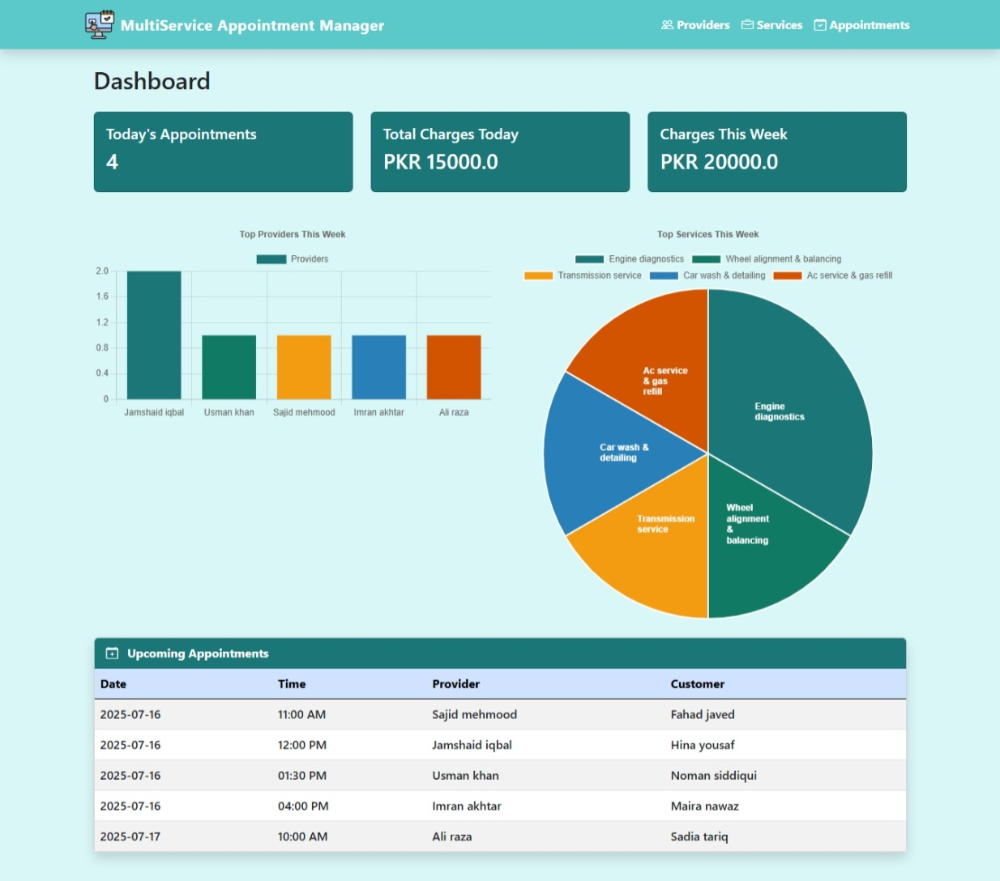
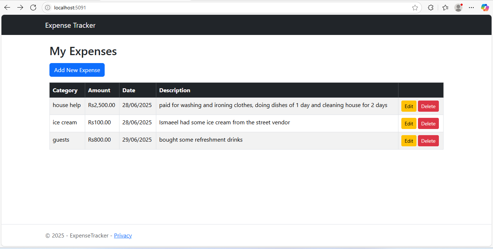

Building efficient desktop and web applications that solve real problems. Passionate about clean code, scalable systems, and continuous learning.
View My WorkSoftware engineer with 2+ years of experience building robust applications and solving complex software challenges.
I discovered my passion for software development during my time at UET Lahore, where I studied Computer Engineering. What started with basic code quickly grew into a deep interest in solving complex problems through technology.
Since becoming a Software Engineer, I’ve worked across the full stack: designing databases, writing optimized SQL queries, developing robust .NET backend services, and building clean front-end interfaces.
Over time, I’ve become more intentional about writing clean, maintainable code. I’m especially drawn to systems that are scalable, user-friendly, and built to last.
Outside of code, I enjoy learning modern frameworks, refining my architecture skills, or stepping outside my comfort zone to take on new challenges.
Download ResumeA comprehensive web application for managing appointments across multiple services and providers. Built using ASP.NET Core MVC and Entity Framework Core with a SQLite database. This project aims to streamline appointment booking, management, and analysis for service-based businesses.
A simple, clean ASP.NET Core MVC web application to track your personal expenses. Built using Entity Framework Core, SQLite, and Bootstrap 5 for a responsive, user-friendly design.
I’m open to opportunities, collaborations, or just a chat. Feel free to send me a message below.